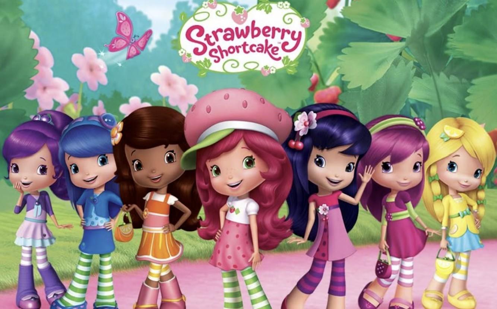

Çilek Kız
Çilek Kız, 1979 yılında Amerikalı yazar ve çizer Barbi Northwood Blyth tarafından yaratılan popüler bir çizgi film karakteridir. Çilek Kız, tatlı ve sevimli kişiliğiyle tanınan genç bir kızdır. Çizgi filmin temel hikayesi, Çilek Kız'ın arkadaşlarıyla birlikte yaşadığı maceralar ve günlük yaşamını konu alır.
Konusu genellikle Çilek Kız'ın arkadaşlarıyla birlikte yaşadığı maceralar ve günlük yaşamını konu alır. Çilek Kız, sevimli ve dost canlısı bir karakterdir. Her bölümde farklı maceralar yaşar ve bu maceralar sayesinde çocuklara değerler öğretir.
Süslü ve renkli dünyasıyla Çilek Kız, çocuklar arasında oldukça popülerdir. Sizler de bu keyifli ve eğlence dolu çizgi filmi rahatlıkla çocuklarınıza izletebilirsiniz.